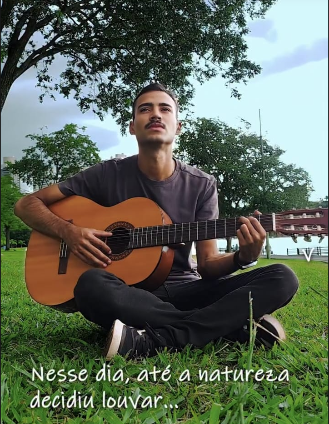
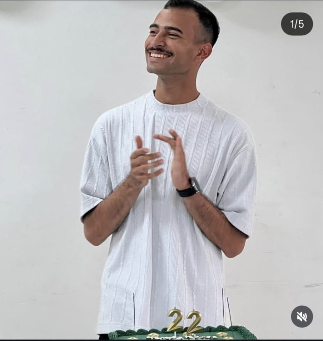

Módulo 01
Louvor com 4 acordes e muita unção
Dó, Sol, Lá menor, Fá. Mais que isso é vaidade.
Em gravaçãoCurso online, 7 dias, 100% unção
Do banco de trás ao púlpito. Pezinho de fogo, voz rouca e o grito de “glória” que faz a plateia pular.
O professor ficou rouco gravando o módulo 1. Está em recuperação com chá de gengibre e muita oração.

Dó, Sol, Lá menor, Fá. Mais que isso é vaidade.
Em gravaçãoTécnica de alongamento vocal da vogal “ó” até a garganta pedir socorro.
Em gravaçãoDo saltinho discreto ao salto triplo com giro. Joelho por conta própria.
Em gravaçãoAbordagem lateral, mão no ombro do dirigente, e “só uma palavrinha”.
Em gravaçãoReprovação silenciosa, sem parar a pregação. Eficaz em 9 de cada 10 cultos.
Em gravaçãoAula prática com cronômetro. Inclui a técnica do “Senhoooor” como ponto de apoio para puxar o ar.
Em gravação
22 anos de idade. 23 de ministério. Ninguém sabe explicar e ele não responde perguntas.
Um dia por vez. Arrasta pro lado que o fogo acompanha.
Dois números acima. Tem que sobrar manga.
Enxugar a testa mesmo sem suor. É costume, não necessidade.
Dia mais difícil. Tenha água e pastilha por perto.
Começa com saltinho. Vizinho de baixo avisado.
Na igreja de um amigo. Nunca na sua primeiro.
Na sala de casa, para a família. Eles não podem sair.
Você está pronto. Ou pelo menos rouco.
“Fiz o módulo 2 na segunda. Na quarta já estava dirigindo a oração da madrugada. Minha voz não voltou até hoje.”
“Peguei o microfone do pastor titular sem ele perceber. Técnica impecável.”
“Meu pezinho de fogo quebrou o piso da igreja. Já me chamaram pra pregar em 4 cidades.”
Não. Estão em gravação. O professor ficou rouco e a mãe dele proibiu de gravar até sarar.
Não, mas ajuda. Batista consegue, só vai demorar o dobro no pezinho de fogo.
Serve. O fogo não tem gênero. O terno dois números acima é opcional.
Reconhecido pela família do professor e por dois vizinhos. PDF enviado por WhatsApp.
Mais ou menos. Se você precisou perguntar, talvez precise do módulo 5.
Os vídeos ainda estão sendo gravados. Deixa seu e-mail que a gente avisa quando o fogo cair.
Enquanto isso, comece a treinar o lenço na testa. Dia 2 não espera ninguém.